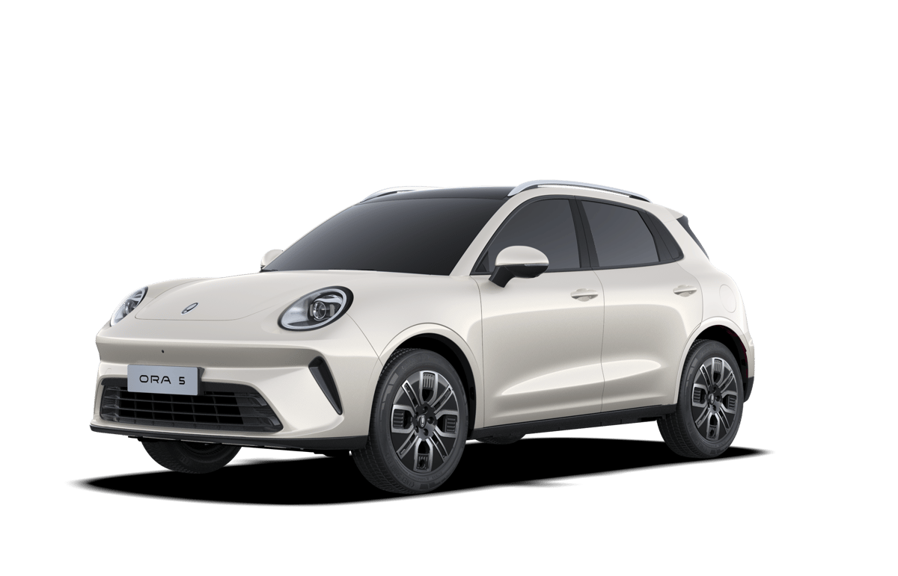

Urban design object / 2026Turbo + Hybrid
ORA5
Ein Statement.
Kein Kompromiss.
Ikonisches Design, zwei Antriebe
und ziemlich viel OHHH.
Scroll to discover ↓
2026GWM ORA 5Design / Drive / Desire
01 / Statement
Nicht gemacht, um
unterzugehen.
Mehr Stil.Mehr OHHH.
Retro-Details. Klare Proportionen. Eine Silhouette, die aus jedem Winkel anders wirkt — und trotzdem sofort ORA ist.
01 / LichtsignaturEin Blick.
Unverwechselbar.
02 / DetailDesigned down
to the last line.
03 / SilhouetteHaltung aus
jedem Winkel.
London Design AwardsDesign of
the Year2025
02 / Choose your driveTurboHybrid01 / 0202 / 02
TURBO

Direkt.
Agil.
- Leistung
- 160 PS
- 0–100
- 9,3 s
- Drehmoment
- 270 Nm
Ab24.990 €¹
Turbo Angebot ↗
HYBRID

Kraftvoll.
Effizient.
- System
- 223 PS
- 0–100
- 7,7 s
- Verbrauch
- 5,1 l
Ab26.990 €¹
Hybrid Angebot ↗
>20 Assistenzsysteme7 Airbags7 Jahre Garantie²
03 / Inside
Smart
looks good.
Technik, die nicht nach Technik aussehen muss. Klar, schnell und intuitiv.
- Multimedia
- 14,6″
- Cockpit
- 10,25″
- System
- Coffee OS 3
 Everything in view
Everything in view
 Your space
Your space
Kompaktaußen.Großinnen.
Länge4,47 m
Radstand2,72 m
Gepäckraumbis 1.120 l
01 / 07
Dover
White
Serienfarbe
02 / 07
Night
Black
750 €
03 / 07Glacier
Grey
750 €
04 / 07
Forest
Green
750 €
05 / 07
Cloud
White
750 €
06 / 07
Ayers
Grey
750 €
07 / 07
Sea
Blue
750 €
05 / Your next moveGültig bis 30.09.2026
Ready for
more OHHH?